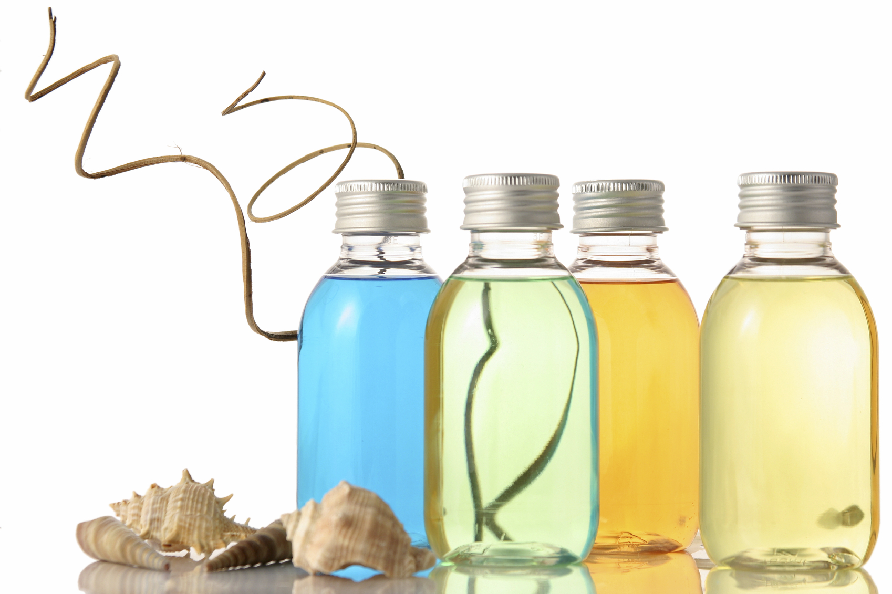
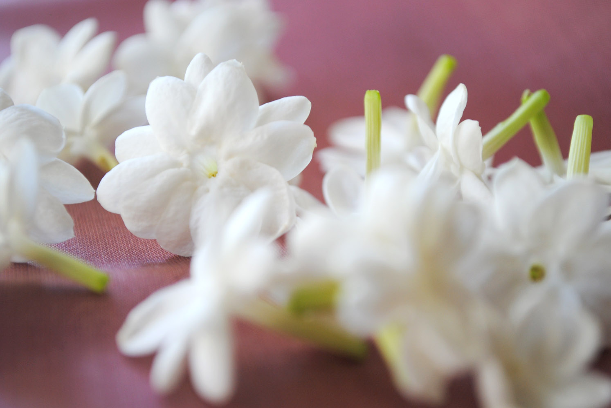
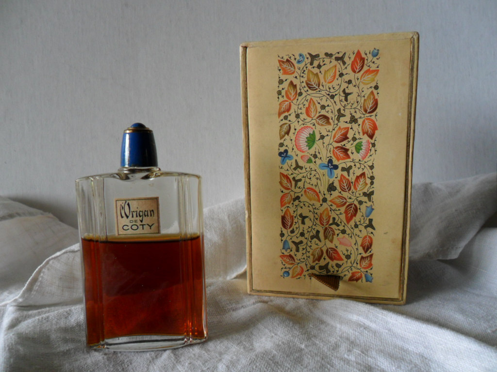

Dacă aţi auzit vorbindu-se la parfumerie ori vreuna dintre prietenele mai cunoscătoare a făcut referire la parfumuri florale, fructate ori oceanice, aţi luat contact, fără să ştiţi, cu familiile parfumurilor. Toate parfumurile se încadrează într-o anumită familie, chiar dacă nu există graniţe ferme între acestea. Iată care este clasificarea modernă a parfumurilor, urmând să o detaliem mai jos: parfumuri florale, orientale, fructate, verzi, ambrate/pădureţe şi parfumuri oceanice.
Parfumurile florale, după cum spune şi numele, au un miros care aminteşte de flori, chiar dacă rezultatul obţinut de maeştrii parfumieri nu îşi are echivalentul în natură, neexistând nicio floare care să miroasă identic cu vreun parfum. Trandafirul şi iasomia predomină în lumea parfumurilor florale, atât pentru că miros minunat, cât şi pentru că o combinaţie a lor dă rezultate foarte bune.
Parfumurile orientale sunt exotice şi misterioase. Deşi au nucleu floral, mirosurile orientale sunt mai grele şi mai opulente. Folosiţi aceste parfumuri toamna şi iarna şi evitaţi-le primăvara şi vara. Dacă la birou aveţi doamne care vă dau afară din încăpere dimineaţa cu parfumul lor, cel mai probabil respectivele folosesc parfumuri grele şi sunt, în puţina lor minte, încântate de persistenţa şi dâra de miros viguroasă pe care o lasă în urmă. O regulă de bun-simţ ne impune să creştem consistenţa parfumurilor odată cu trecerea zilei.
Parfumurile fructate folosesc abundenţa de arome a fructelor, de la struguri, smochine, stafide şi coacăze negre, la papaia, ananas, guava ori lychee. Nu există niciun parfum obţinut numai din esenţă de fructe, dar există parfumuri care se apropie de acest ideal, cum este Ô de Lancôme, cu iz de lămâie ori Baby Doll, produs de Yves Saint Laurent.
La parfumurile verzi cuvântul-cheie este prospeţime, aducând aminte de flori de câmp, pajişti înverzite, văi răcoroase ori izvoare susurând. Această familie de parfumuri a fost inventată de Francois Coty în 1917, care a creat parfumul Chypre.
Parfumurile ambrate/pădureţe devin pe zi ce trece o specie pe cale de dispariţie. Maeştrii francezi foloseau termenul ambră pentru parfumurile pe care le numit astăzi orientale şi termenul lemnos pentru a defini parfumurile pădureţe, conţinând răşini, rădăcini şi scoarţă de arbori mirositori. În 1907 François Coty uneşte cele două familii şi creează parfumul L'Origan, care a devenit foarte popular, declanşând o nouă modă. Unele parfumuri din această familie au făcut un pas mai departe, adăugând ingrediente cu iz de piele, care provine fie din răşina de mesteacăn, fie dintr-un extras de piei tratate, emanând sexualitate.
Parfumurile oceanice au apărut odată cu creaţia celebrului Dune al lui Christian Dior, care a îndrăznit să creeze un nou miros, cel al oceanului combinat cu al nisipului ţărmului de mare ars de soare. Atât de diferit de cele existente a fost noul parfum, încât a creat practic o nouă familie de parfumuri.